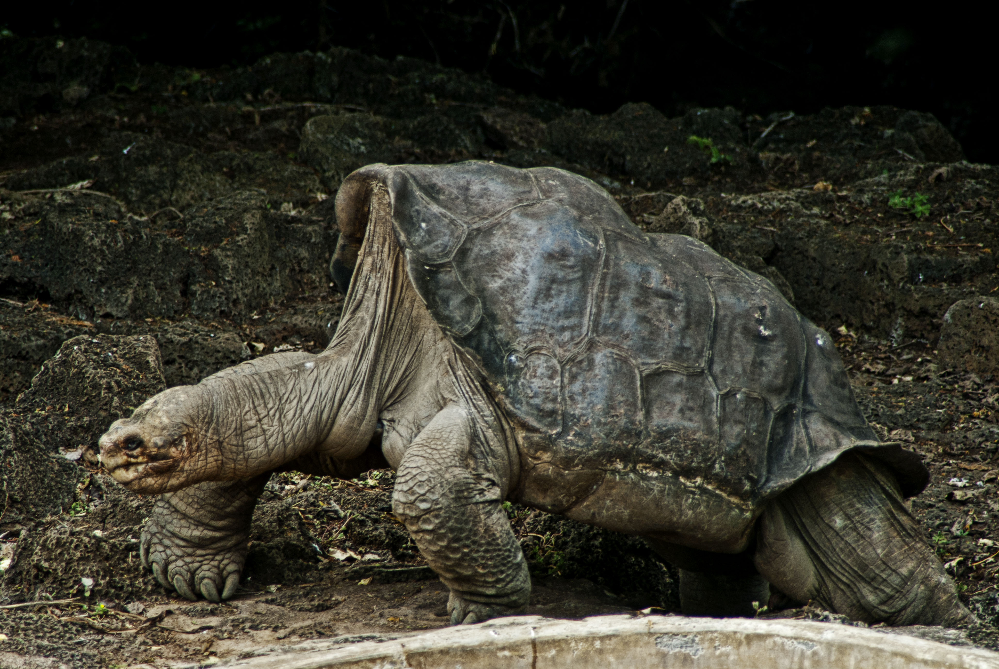

Y pueden ser:
La característica más importante del esqueleto de las tortugas es que una gran parte de su columna vertebral está soldada a la parte dorsal del caparazón. El esqueleto hace que la respiración sea imposible por movimiento de la caja torácica; se realiza principalmente por la contracción de los músculos abdominales modificados que funcionan de modo análogo al diafragma de los mamíferos y por movimientos de bombeo de la faringe. Aunque carecen de dientes, tienen un pico córneo que recubre su mandíbula, parecido al pico de las aves.
Al igual que todos los reptiles, las tortugas son animales ectotérmicos, lo que significa que su actividad metabólica depende de la temperatura externa o ambiental. Las tortugas mudan la piel; sin embargo, a diferencia de los lagartos y serpientes, lo hacen poco a poco. También mudan o desprenden los escudos del caparazón, individualmente y aparentemente sin un orden determinado. Las tortugas son diápsidas de manera secundaria, ya que carecen de fosas temporales. De manera análoga, poseen emarginaciones temporales, bordes cóncavos en la región temporal que sirven para la inserción muscular.

Se caracterizan por su lento desplazamiento, lo que conllevó la expresión coloquial a paso de tortuga.
Muchas gracias por visitarnos!
Subir arriba